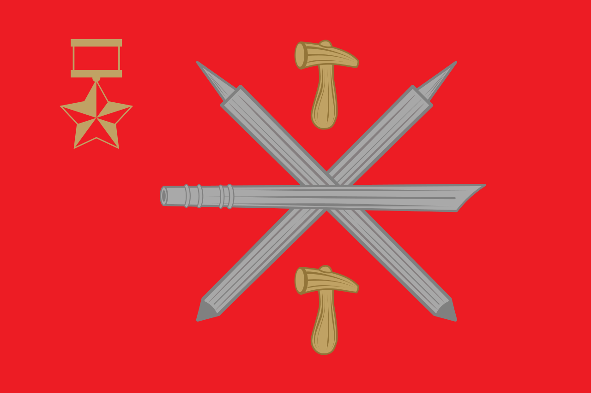
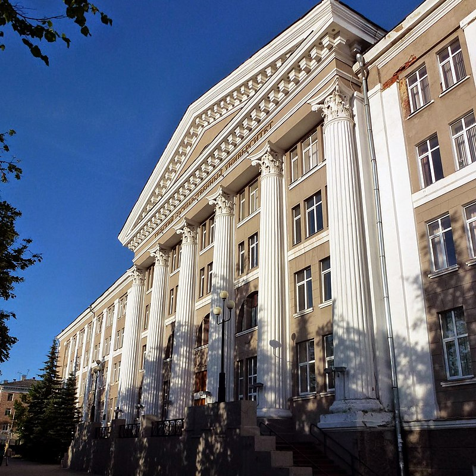

Тула — город в России, административный центр Тульской области и городского округа город Тула.
Город-Герой (c 1976 года).
Тула расположена на севере Среднерусской возвышенности на берегу реки Упы в 193 км к югу от Москвы. Протяжённость города с севера на юг — 30 км, с запада на восток — 25 км.
По итогам проводившегося в 2014 году Всероссийского конкурса на звание «Самого благоустроенного городского (сельского) поселения России» Тула заняла третье место в категории «Городские поселения (городские округа), являющиеся административными центрами (столицами) субъектов Российской Федерации»[10].
Тула впервые упоминается в Никоновской летописи XVI века под 1146 годом. На территории Тулы имеется более 300 объектов культурного наследия: это памятники архитектуры и градостроительства, истории, произведения монументального искусства, археологии.
 Свойство |
Значение |
|---|---|
| Страна | Россия |
| Субъект федерации | Тульская область |
| Первое упоминание | 1146 год |
| Тип климата | Умеренно континентальный |
По степени суммарной техногенной нагрузки в Центральной России Тула — один из самых «загрязнённых» городов. В городе расположено около 200 предприятий, оказывающих вредное воздействие на окружающую среду. Деятельность предприятий в течение многих лет сопровождалась загрязнением атмосферного воздуха, поверхностных и подземных вод, загрязнением почв. Одним из важнейших факторов, оказывающих пагубное влияние на окружающую человека среду, является загрязнение атмосферы. Более 90 процентов от этого количества — выбросы предприятий чёрной металлургии. Несмотря на довольно высокий уровень выбросов, наблюдается некая динамика снижения их объёмов. Список загрязняющих веществ возглавляют газообразные и жидкие вещества: оксид углерода, диоксид серы, оксиды азота.
В ходе гидрохимических наблюдении была выявлена высокая степень загрязнения всех поверхностных вод, расположенных в городской черте, среди которых реки Упа и Тулица, а также ручьи Щегловский, Рогожинский и Тростянский. На эти водоёмы приходится бо́льшая часть антропогенной нагрузки от жилого сектора и индустриальных объектов. Наиболее сильное пагубное воздействие исходит от старых шламонакопителей — Косогорского металлургического завода и МУП «Тулгорводоканал». Также поверхностные воды загрязняются в результате деятельности ПАО «Тульский патронный завод», Тульского машиностроительного завода и ФКЗ «Штамп».